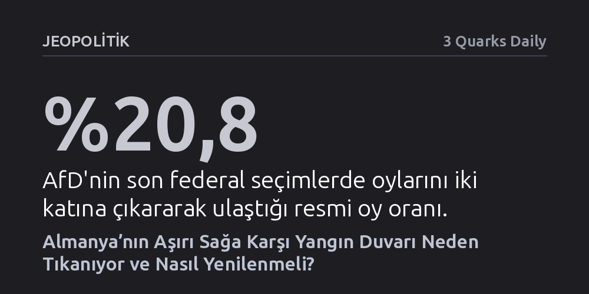

JEOPOLITIK · 3 Quarks Daily · 2026-09-08
Almanya'da aşırı sağcı AfD'ye uygulanan katı tecrit duvarı, merkez sağı felç ederek aşırı sağı daha da güçlendiriyor. Çözüm, partiyi iktidardan uzak tutarken somut yasa tekliflerinde parlamento desteğini dışlamayan daha esnek bir modele geçmek.
Demokrasiyi savunma gerekçesiyle kurulan mutlak siyasi tecritlerin, merkez sağı felç ederek aşırı sağı nasıl büyütebileceğini ve siyasal sistemi nasıl kilitleyebileceğini gösterir.

Almanya’da aşırı sağcı Almanya için Alternatif (AfD) partisinin yükselişi, geleneksel partilerin oluşturduğu siyasi güvenlik duvarını (Brandmauer) giderek daha kırılgan hale getiriyor. Saksonya-Anhalt eyalet seçimlerinin ardından AfD dışarıda bırakılarak hükümet kurmanın neredeyse aritmetik bir çıkmaza dönüşmesi, bu tabunun geleceğini açık bir tartışma konusu yaptı. Yangın duvarları yangını yavaşlatır ancak tek başlarına söndüremez; bugün Alman siyasetinin asıl sorunu, bu duvarın tamamen mi yıkılacağı yoksa farklı bir stratejiyle mi takviye edileceğidir.
Demokratik açıdan bakıldığında hiçbir partinin koalisyona girme anayasal hakkı yoktur; partiler kiminle ortaklık kuracaklarına özgürce karar verir. Ancak çok partili bir parlamenter sistemde hiçbir aktörün mutlak çoğunluk sağlayamadığı gerçeği düşünüldüğünde, büyük bir seçmen kitlesini temsil eden bir partinin toptan dışlanması sistemi yapısal bir krize sürükler. Müzakere ve uzlaşma zemininden mahrum kalan temsilciler işlevsizleşirken, onları seçen yurttaşların meclisteki ağırlığı da fiilen aşınır.
Siyasi tecrit uygulamasının ahlaki ve hukuki temeli, AfD'nin milyonları etkileyecek geri gönderme planları, Rusya yanlısı dış politika çizgisi ve Avrupa entegrasyonunu reddeden hedefleriyle liberal demokrasiye doğrudan tehdit oluşturduğu inancına dayanır. Bu gerekçe tecridi ilkesel olarak haklı kılsa da sahadaki pratik sonuç tam tersi bir tablo üretmektedir. Duvar, AfD'yi hükümet ortaklıklarının dışında tutmayı başarmış; fakat partinin tabanını zayıflatma ve seçmeni caydırma hedefinde açıkça başarısız olmuştur.
AfD son federal seçimde oylarını ikiye katlayarak yüzde 20'nin üzerine çıkarmış, kamuoyu yoklamalarında ise yüzde 30 bandına yerleşmiştir. Tecridin asıl siyasi maliyetini ise merkez sağdaki Hristiyan Demokratlar (CDU) ödemektedir. CDU, AfD ile temas etmemek adına kendi çizgisine tamamen aykırı sol koalisyonlara ve politikalara razı olmakta; bu durum merkez sağın inandırıcılığını tüketerek muhafazakâr seçmeni doğrudan AfD saflarına itmektedir. CDU siyasetçilerinin sıkça dile getirdiği gibi, demokrasiyi koruma çabası merkez sağın iyi siyaset üretme kabiliyetini elinden almaktadır.
Almanya'da uygulanan mevcut tecrit biçimi, başlangıçtaki koalisyon yasağının çok ötesine geçerek en sert ve katı yorumuna ulaşmıştır. Bu yorum uyarınca CDU, kendi getirdiği yasa tasarılarına AfD'nin kendiliğinden oy vermesini dahi kabul edilemez bir işbirliği saymaktadır. Nitekim Friedrich Merz, 2025 başlarında daha sıkı göç tedbirlerini içeren bir önergeyi kimin destekleyeceğine bakmaksızın oylamaya sunmak istediğinde, parti içi ve dışı yoğun bir baskıyla karşılaşarak geri adım atmak zorunda kalmıştır.
Oysa siyasi partilerin birbirini sistemden tamamen aforoz etmesi tehlikeli bir emsal oluşturur. CDU'lu Johannes Beermann'ın hatırlattığı üzere, "Kırmızı kartı oyuncular değil, yalnızca hakem kullanabilir." Bir partinin meşruiyetine ve yasadışılığına anayasa mahkemeleri karar verir; siyaset sahnesindeki rakiplerin bu rolü üstlenip rakibinin parlamento gücünü sıfıra indirmeye çalışması, özellikle AfD eyaletlerde tek başına çoğunluğa yaklaşırken sürdürülemez bir tıkanıklık yaratmaktadır.
Mevcut düğümü çözmenin yolu, tecrit duvarını tamamen yıkmak değil, onu daha esnek ve gerçekçi bir çerçeveye oturtmaktır. En makul ara formül; AfD ile koalisyon ve pazarlığı kesin biçimde reddetmeye devam ederken, somut yasa tekliflerine onların dışarıdan vereceği bağımsız parlamento desteğini kriminalize etmekten vazgeçmektir. Elbette bu esnemenin bir kaygan zemin yaratma riski bulunur; meclisteki oyları kazanmak için aşırı sağa tavizler verilmeye başlanırsa iktidar paylaşımına giden kapı aralanabilir.
Nitekim Hollanda bu konuda ibret verici bir örnek sunmaktadır. Merkez sağ liberal parti, solla uzlaşmaktan yorulup aşırı sağcı Geert Wilders ile hükümet kurma seçeneğini masaya getirdiğinde, Wilders'in partisi meşruiyet kazanarak seçimden birinci çıkmış ve hükümetin merkezine yerleşmiştir. Almanya aynı hataya düşmemek için aşırı sağın göç konusundaki radikal dilini kopyalamaktan kaçınmalı, fakat meclis aritmetiğini felç eden katı tecrit saplantısını terk ederek duvarı yönetilebilir bir hatta çekmelidir.